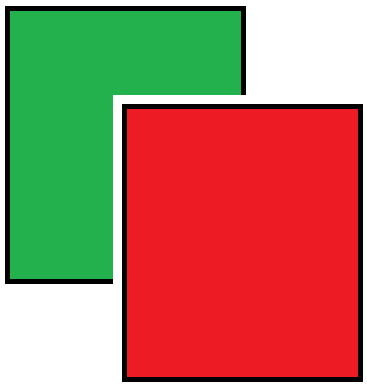
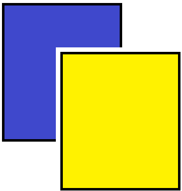
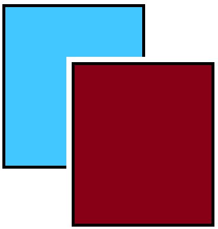

<div class="param">
    <div class="title">
        Choisissez deux couleurs que vous différenciez bien : 
    </div>
    <br><br>
    <div class="item" (click)="setDalt(0)">
        
        <br>
        <span>Classique</span>
    </div>
    <div class="item" (click)="setDalt(1)">
        
        <br>
        <span>Deutéranopie ou Protanopie</span>
    </div>
    <div class="item" (click)="setDalt(2)">
        
        <br>
        <span>Tritanopie</span>
    </div>
</div>